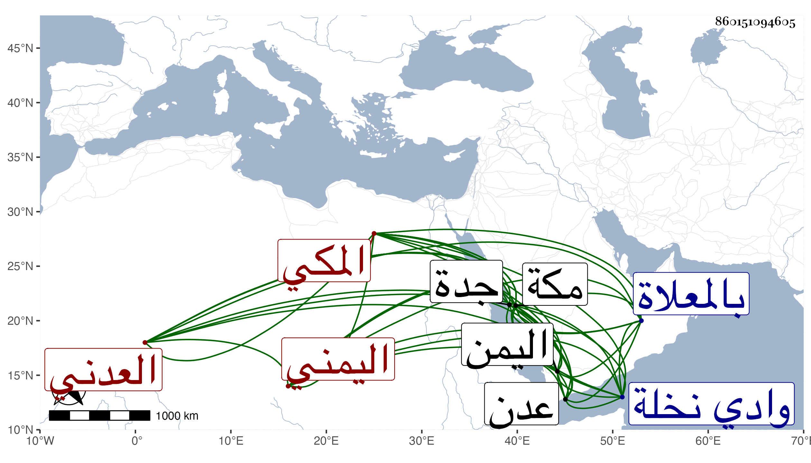

0902Sakhawi.DawLamic.ITO20230111-ara1.EIS1600.860151094605
Biography ID: 860151094605
أحمد بن عبد الله بن محمد بن علي الشهاب بن العفيف اليمني العدني المكي كان أبوه من أعيان التجار بعدن فولد له صاحب الترجمة بها ثم انتقل مع أبيه إلى مكة وأقام بها معه وبعده نحو أربعين سنة إلا أنه ربما سافر في بعض السنين إلى اليمن لحاجة ثم يعود إلى أن توجه إليها مرة فأدركه الأجل بجدة في جمادى الأولى سنة عشرين فحمل إلى مكة فدفن بالمعلاة وكان تعانى الزراعة بعد موت والده فيما خلفه له ولأخوته من الأراضي والسقايات بأرض نافع من وادي نخلة ، وما مات حتى باع نصيبه في ذلك وغيره وكان ينطوي على خير ومروءة ، وصاهر الجمال موسى بن البدر بن جميع على ابنته وكان له ولد اسمه محمد ويلقب بالجمال توفي قبله بمكة في سنة سبع عشرة . ذكره الفاسي .
